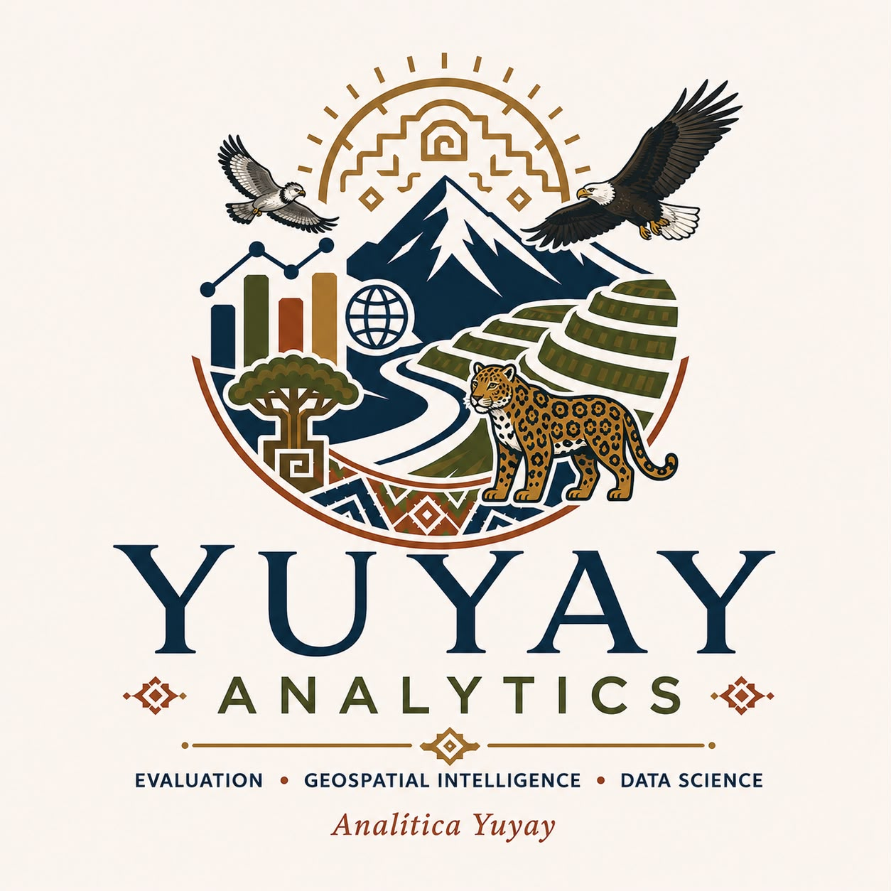

Environmental Evaluation
Independent programme reviews, theory of change, impact assessment and institutional learning.

International environmental evaluation and sustainability consulting, strengthened by advanced data science and geospatial analytics.
What we do
Independent programme reviews, theory of change, impact assessment and institutional learning.
Conservation, ecosystem-based adaptation, protected areas and sustainable land management.
GIS, remote sensing, predictive modeling, environmental data pipelines and decision support.
International experience
Our team
Environmental evaluation, biodiversity conservation, climate adaptation and sustainable development specialist with decades of international experience.
Data scientist with extensive U.S. experience in environmental and energy research, including oil and gas, coal ash, carbon storage, land-use dynamics and watershed modeling.